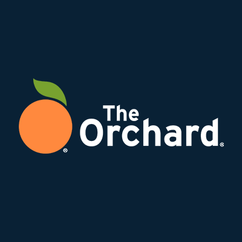
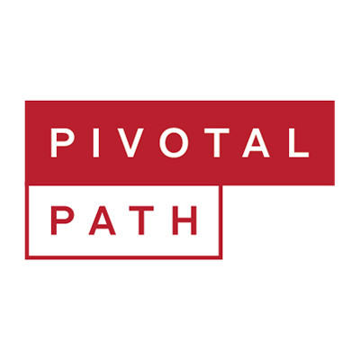
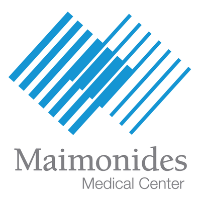

2022 -

Meta
Senior Software Engineer
Meta builds technologies that help people connect, find communities, and grow businesses.

Meta builds technologies that help people connect, find communities, and grow businesses.
Compass is a real estate technology company with a powerful end-to-end platform that supports the entire buying and selling workflow. We deliver an incomparable experience to both agents and their clients all in service of the Compass mission: to help everyone find their place in the world.

The Orchard is a leading music, film and video distribution company operating in over 30 markets worldwide. With a comprehensive artist & label services offering including full-service marketing, sync licensing, video services, transparent data analysis, advertising, rights management, digital and physical distribution and more, The Orchard empowers creators and businesses to grow and adapt in the dynamic global industry.
Wyng builds technology that powers compelling digital campaigns and promotions for agencies and brands. In 2011, Wyng powered the first ever hashtag campaign in connection with a Super Bowl ad, and continues to evolve its platform to align with shifts in consumer behavior.

PivotalPath is a hedge fund intelligence organization built by a team of experienced allocators and technologists. The firm evaluates investments from an allocator's perspective and provides comprehensive ratings on 1,500+ funds, accounting for over 90% of global hedge fund assets.

The Hospital Information Services Department of Maimonides Medical Center is responsible for maintaining the medical records of patients.